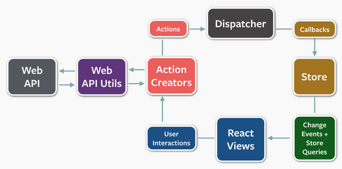

FLUX是一個由Facebook提出來的開發架構(FLUX 是一個 Pattern 而不是一個正式的框架)，目的是在解決所謂的MVC在大型商業網站所存在的問題，把沒有條理跟亂七八糟的架構做一個流程規範的定義。
About FLUX
以下內容參考What is Flux? 這篇的介紹很多，有興趣請先到原文出處學習與感謝分享。
這邊先提到一下兩個主軸:
FLUX希望作到的事情
- Use explicit data instead of derived data
- Separate data from view state
FLUX希望帶來的好處
- Improved data consistency
- Easier to pinpoint root of a bug
- More meaingful unit tests
解說可以看一下這部影片Facebook官方用自己的網站解說FLUX的起源與MVC在FB遇到的問題(24分前是FLUX, 24後是ReactJS)
MVC與遇到的問題
在介紹FLUX前，先讓大家了解一下目前普遍在使用的MVC架構

上面這是一個MVC架構所定義的流程與各流程的內容, 我們將一個網頁程式分為三項組成的要素:
- Controller
- Model
- View
MVC普遍被大家用在目前的網站開發專案當中，因為它簡單方便的幫我們分別定義了各層需要異動的地方，把關注點隔離開來(separation of concerns，SOC)。但隨這著專案的Controller,Model與View變多沒有限制的流程也讓他產生了一些問題。

而上面是一個複雜的MVC流程，這也是比較貼近我們實務上大家遇到的架構
比較起來很快就發現了一點，當我們功能越多，提供的Controller, Model, View關聯愈複雜時，往往會忘了哪一個連去哪一個，這會讓我們的架構定義的越來越發散，久了就不知道什麼才是正確的架構，而這也會讓我們難以維護跟修改，甚至擴大了測試範圍…。
傳統的雙向資料綁定會造成連鎖更新，不容易去預測一個單一互動所造成的改變結果，這也是為什麼擴大了測試範圍的原因。
原文如下:
We found that two-way data bindings led to cascading updates, where changing one object led to another object changing, which could also trigger more updates. As applications grew, these cascading updates made it very difficult to predict what would change as the result of one user interaction. When updates can only change data within a single round, the system as a whole becomes more predictable.
FLUX介紹
接著我們先來介紹FLUX的中心思想打造單一的資料流進行方式(one-way data flow)，相對於MVC只定義了三個角色的功能與關係，FLUX更明確的定義了一個資料進行的方式，使得大家更容易遵守規則。
- ####Actions
- Helper methods that facilitate passing data to the Dispatcher
- ####Dispatcher
- Receives actions and broadcasts payloads to registered callbacks
- ####Stores
- Containers for application state & logic that have callbacks registered to the dispatcher
- ####Controller Views&View
- React Components that grab the state from Stores and pass it down via props to child components.
這邊FLUX使用了Dispatcher這樣的一個唯一物件(singleton)來管理一到多個Store，而每個Store可對應一個View的概念來提供呈現所需資料，而當需要增加view的互動功能時，則透過向Dispatcher註冊Action的方式來達到事件的觸發。 整個資料的處理流程就改變為下面的樣貌：

這邊要注意，因為FLUX的大前提是建立一個單一的資料進行方式，所以非常不建議為了view的顯示而跳過步驟直接修改Store，這樣又會讓架構跟先前的MVC提的遇到一樣不明確的問題。
與頁面上各控制項的互動如下圖

在FLUX架構上，要避免從Store外部直接改變Store。我們可以透過使用 window.DispatchEvent 送出CustomEvent的方式，並在Store中接收CustomEvent來做到。 簡單來講就是維持他單一變化的flow，避免架構上出現壞味道。
Cowork with Web service
這邊找到一張先前看到的完整解釋FLUX架構如何跟Web Service的流程圖，下圖顯示了一個資料如何從Web service拿到後到畫面顯示以及如何互動去取得其他資料來呈現。

手工打造FLUX架構
這邊就用JS原生的語法來建立一個簡單的FLUX架構的範例吧
上面這範例是參考Gasolin大大的文章實作的，請參考使用 FLUX 架構的概念，漸進改善一般 Javascript 程式碼的組織方式這篇好文。
從範例來看Store 與 App 可以分開來測試，這對大型App是很重要的，每個測試環節應該確保該function可以運作。
結語
看起來FLUX真的很單純，用事件註冊與驅動指派的方式來統一管理資料處理的流程，不讓架構在大量增加時有所崩壞，而且應該可以是一種蠻適合JS的開發模式，又可透過原生的JS實作(無論你用什麼框架應該都可以實作)。
在FLUX架構下，搭配View這邊頻繁DOM異動的做法就是Always Re-render! 這也是FB搭配FLUX推出的另外一個JS框架ReactJS提出Virtual DOM的概念，When data changes, React re-renders the component 透過這樣的方式來改善頻繁的DOM異動。
如果對FLUX有心得的朋友也麻煩指導小弟一下，看看是不是有什麼誤解，也感謝大家的指教。